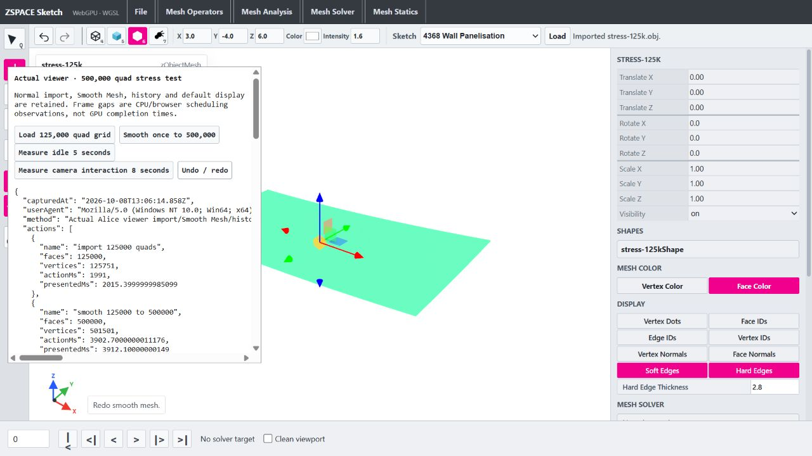

Native Release with opt-in stage timers; three sequential trials before/after, no concurrent compilation. Timers are disabled in the production build. Individual phase medians do not necessarily sum to the median total.
| Workload / grid phase | Before ms | After ms | Time reduction |
|---|---|---|---|
| Cube eighth division | 1101.01 | 458.39 | 58.4% |
| Eight divisions in one native call | 1297.56 | 523.89 | 59.6% |
| Grid 125000 → 500000 quads | 628.96 | 489.76 | 22.1% |
| face-edge-collection | 60.31 | 39.09 | 35.2% |
| subdivision-output | 100.26 | 17.08 | 83.0% |
| storage-install | 397.63 | 370.60 | 6.8% |
| normals | 47.44 | 50.32 | -6.1% |
Node WASM output equivalence and C++ call durations, not a browser/FPS benchmark. Fresh cube per trial; alternate before/after call order across trials. First trial includes cold heap growth; later trials reuse warm modules. Calls include subdivision, normals and render export; exclude JS upload/readback/renderer/history. Twelve exported buffers are byte-identical at every stage and floating outputs finite.
| Workload | Before ms | After ms | Time reduction |
|---|---|---|---|
| Cube eighth division — 393216 quads | 662.28 | 355.12 | 46.4% |
| Grid subdivision — 500000 quads | 532.50 | 470.51 | 11.6% |
| Phase | After ms |
|---|---|
| face-edge-collection | 32.60 |
| subdivision-output | 14.84 |
| storage-install | 275.85 |
| normals | 34.24 |
| render-export | 60.87 |
WebGPU/WGSL, 1280 × 720 CSS pixels, device pixel ratio 1.5, default wire+shaded display and history. One before/after run with no concurrent compilation. Action timings include transfers, C++, reconstruction, history and UI; presentation adds two rAF callbacks, not GPU completion.
| Action | Before ms | After ms | Time reduction |
|---|---|---|---|
| import 125000 quads | 2073.10 | 1991.00 | 4.0% |
| smooth 125000 to 500000 | 3912.70 | 3902.70 | 0.3% |
| undo smooth | — | 790.60 | — |
| redo smooth | — | 2787.00 | — |
| After sample | Median frame gap ms | p95 ms | Max ms | Gaps >50ms | Input events |
|---|---|---|---|---|---|
| idle | 16.70 | 16.80 | 18.70 | 0 | 0 |
| camera interaction | 16.70 | 16.70 | 16.80 | 0 | 4 |
Visible render scheduling can remain smooth once the mesh is displayed, while synchronous Smooth Mesh and history actions still block the main thread for seconds. A 500,000-quad grid is not representative of every mesh or display overlay. No broader UI redesign was made.
Browser observations · Rerun isolated viewer test

Results and changed files · Raw production WASM trials · Method audit
src/zCore/geometry/detail/zMeshProfile.hsrc/zCore/geometry/detail/zMeshFaceListStorage.hsrc/zCore/geometry/detail/zMeshFaceListStorage.cppsrc/zInterface/functionsets/zFnMesh.cppsrc/zInterface/objects/zMeshObjectStorage.hwasm/bridge/zspace_core_wasm_bridge.cpptests/smoke/mesh_iterator_geometry_fixture.htests/mesh-iterator-runtime-parity.mjstests/performance/write-subdivision-profile-build.mjstests/performance/write-viewer-stress-page.mjsreports/generate-subdivision-report.mjsreports/subdivision-native-before.jsonreports/subdivision-native-after.jsonreports/subdivision-phases-before.csvreports/subdivision-phases-after.csvreports/subdivision-runtime-parity.jsonreports/subdivision-wasm-profile.jsonreports/subdivision-viewer-before.jsonreports/subdivision-viewer-after.jsonreports/subdivision-optimization.htmlreports/subdivision-optimization.jsonreports/generate-mesh-audit.mjsreports/mesh-topology-audit.htmlreports/mesh-topology-audit.json../zspace_alice_webviewer/reports/viewer-500k-stress.html../zspace_alice_webviewer/reports/Alice-Viewer-Implementation-Roadmap.md../zspace_alice_webviewer/wasm/zspace_core.js../zspace_alice_webviewer/wasm/zspace_core.wasmreports/subdivision-viewer-500k.pngNo commit or push. Existing dirty source and runtime backups are preserved.